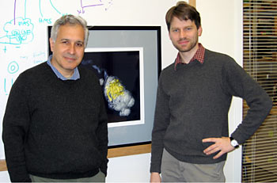

News Archives : 2004 : Axon Branch Removal at Developing Synapses by Axosome Shedding
by Jeff Lichtman
November 18, 2004
This work (Neuron 2004, 44:651-661) decides a question that has lingered for nearly 30 years concerning the way in which excess nerve branches disappear in the developing nervous system. By combining two different approaches, we came to an unexpected conclusion: glial cells are eating up pieces of axons that are being removed from sites of former synaptic contact. Thomas Misgeld, a co-first author, imaged living fluorescently labeled axons over hours and found that as axons retreated from sites of their former synaptic contact small fluorescent spherules were left behind. Using a recent twist on an older technique, Derron Bishop, the other co-first author, made computer reconstructions of serial transmission electron micrographs of axons that were in the process of retreating. He found the ultrastructural equivalent of the spherules which were small membrane enclosed particles containing synaptic vesicles (we dubbed them "axosomes"). All the axosomes were enclosed within a second membrane of glial plasma membrane. We found that eventually the contents of the axosomes were released into the cytoplasm of the glial cells allowing for intermixing of cytoplasm of neurons and glia. This work suggests that glial cells take an active part in the dismantling of synaptic circuits that occurs in the developing nervous system and provides evidence for a novel pathway of signaling between nerves and the cells that support them.
See also: Coverage in the Journal of Cell Biology
|
 Co-authors Jeff Lichtman and Thomas Misgeld (3 not pictured) |